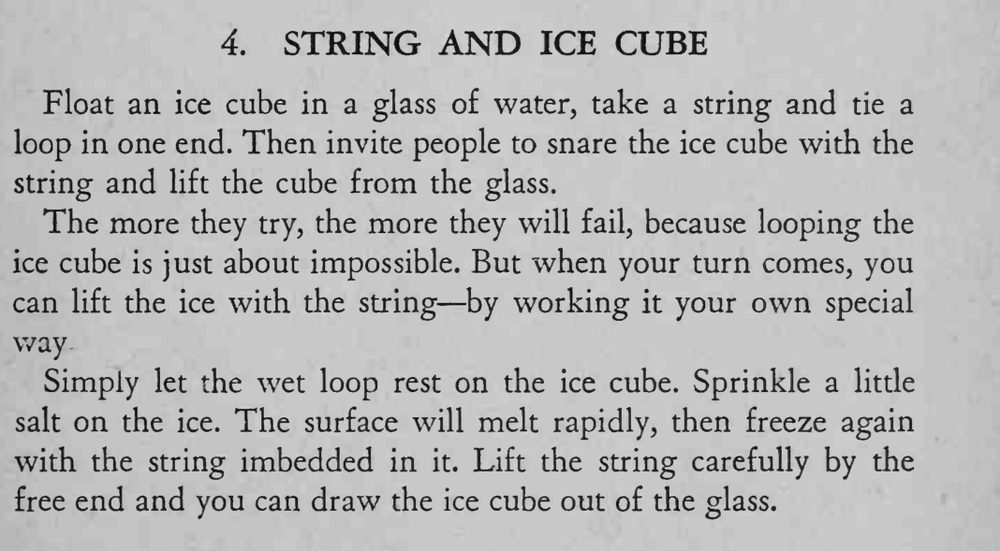

冰块浮在杯中，谁都套不住它；魔术师把线放在冰上、撒一点盐，再轻轻一拉，冰块就被线提了出来。
盐要少，等冰面重新冻住再提线，急不得。

Float an ice cube in a glass of water, take a string and tie a loop in one end. Then invite people to snare the ice cube with the string and lift the cube from the glass. The more they try, the more they will fail, because looping the ice cube is just about impossible. But when your turn comes, you can lift the ice with the string by working it your own special way Simply let the wet loop rest on the ice cube. Sprinkle a little salt on the ice. The surface will melt rapidly, then freeze again with the string imbedded in it. Lift the string carefully by the free end and you can draw the ice cube out of the glass.